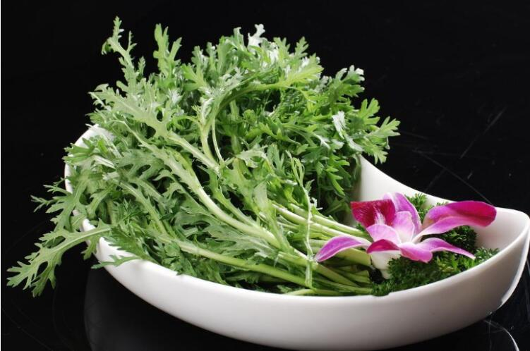

为什么茼蒿是“皇帝菜”？
茼蒿，一种凉拌和火锅吃法中最常见的绿色蔬菜之一，可以说老少皆宜，适合吃的人群和喜欢吃的人群占比都非常高，而且茼蒿的营养价值等相关因素，决定了他的极高地位“皇帝菜”。不过茼蒿虽然有点万千，却也有人需要避开他们。

茼蒿的药用价值
先说说茼蒿的药用价值。
茼蒿又名同蒿，蓬蒿，蒿菜、塘蒿、蒿子等，茼蒿嫩茎叶可作为蔬菜食用，晒干也可入药，是一种常见的药食同源植物。
茼蒿的茎、叶同食, 有蒿之清气、菊之甘香, 鲜香脆嫩的口感。茼蒿原产我国, 栽培已有1000 多年的历史, 其名始见于唐代名医孙思邈所撰的《千金食治》。
据《中药大辞典》记载，茼蒿性味甘、辛、平，无毒，有“和脾胃、消痰饮、安心神”之功效，主治脾胃不和，二便不通，咳嗽痰多，烦躁不安等症。
1、改善贫血
茼蒿除了富含丰富的维生素C以外, 胡萝卜素的含量比菠菜高, 并含丰富的钙、铁, 对改善贫血有一定作用，是儿童和贫血患者的必食佳蔬。
2、促进蛋白质代谢、加速脂肪分解
茼蒿还有促进蛋白质代谢的作用, 有助于脂肪的分解。因此涮火锅加入一些茼蒿, 可促进鱼类或肉类蛋白质的代谢作用, 促进食物营养的吸收。
3、清热、解毒、健脾消食
由于茼蒿含有特殊香味和挥发油成分, 具有清热、解毒、有助于健脾消食、增加食欲等功效。
4、降血压
富含钾元素，有通利小便、消除水肿、降低血压之功效。
5、预防心血管疾病
植物甾醇可通过降低胆固醇，预防和治疗冠状动脉粥样硬化，减少心血管疾病的风险；另外植物甾醇还可以抑制肿瘤血管形成而发挥抗肿瘤的作用
6、抑菌作用
茼蒿中的二萜成分对多种微生物有很好的抑菌作用，包括金黄色葡萄球菌、枯草芽孢杆菌、大肠杆菌、铜绿假单胞菌、白色念珠菌和须毛癣菌。茼蒿花序精油对黄曲霉、腐霉菌、链格孢属菌、黑斑病菌、核盘菌和干朽菌等多种微生物有很强的抑菌作用。
8、促进食欲
茼蒿有特殊的香味，主要是因为它含有挥发性的物质，能有助于增加唾液的成分，从而能很好的促进食欲，有开胃的效果。
9、美容
日常食用茼蒿能起到很好的改善肌肤粗糙的功效。
10、提高免疫力
茼蒿中的营养物质含量比较丰富，日常食用能提升人体的免疫力，也能很好提升人体的机能，能有效阻止一些病菌侵入。
11、化痰止咳
茼蒿能很好的缓解咽喉的多痰现象，能有效的解决喉咙发痒咳嗽的现象，有利于化痰止咳。
12、降火
气候干燥的时候很多人都会出现肝火旺的现象，这时候吃茼蒿能很好的缓解肝火旺的现象，也能起到明目的效果。
13、预防便秘
茼蒿中含有丰富的膳食纤维，能有效的促进肠胃的蠕动，及时的帮助人体排出毒素，从而能达到促进排便预防便秘的功效。
 上一篇
上一篇